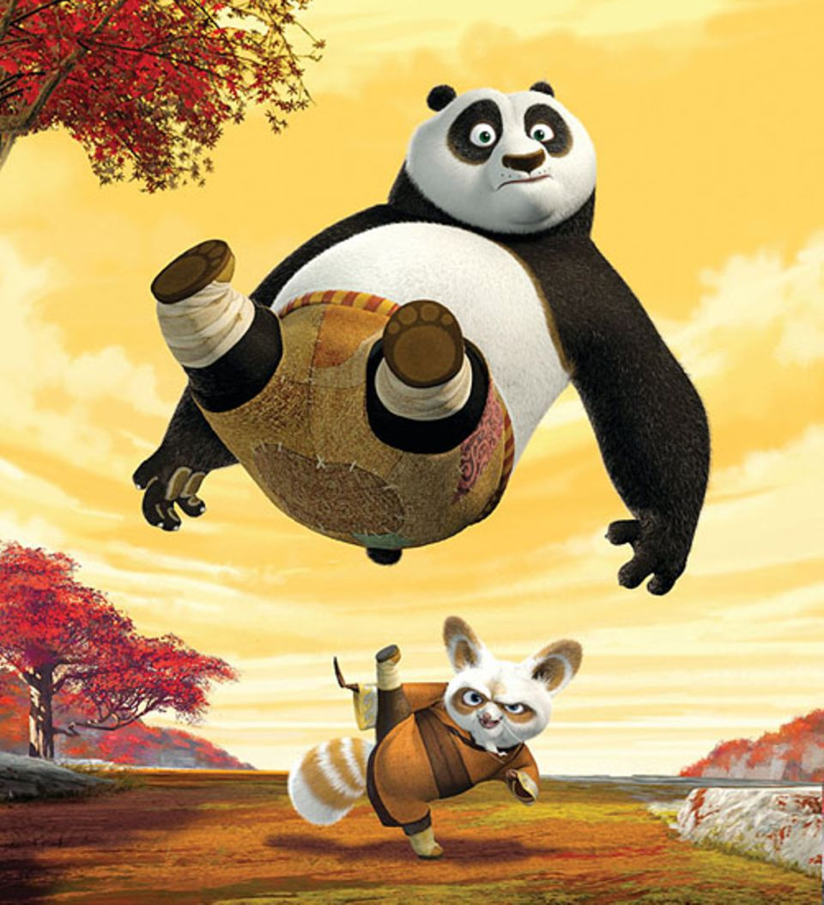
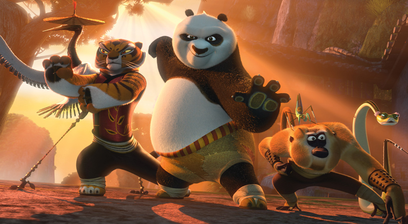

Po ist trotz seines Aufstiegs vom Suppenmacher-Lehrling bei seinem Adoptivvater Mr. Ping zur Ausbildung zum Legendären Drachenkrieger bei Meister Shifu, noch immer der einfache, bescheidene Panda-Bär wie früher. Als absoluter Kung Fu-Fan beherrscht Po zuerst nur die grundlegenden Kung Fu-Bewegungen. Dies ändert sich jedoch als er auf die Furiosen Fünf trifft und dank Ihrer Hilfe und der Hilfe des Meister Shifu, seine Kampfkünste lernt in Perfektion zu beherrschen und den seinen Panda-Stil erweckt. Dennoch bestaunt und bewundert er immer wieder die Kung Fu-Künste seiner Helden, der Furiosen Fünf und die des Meister Shifu.
Po´s Eigenschaften
- Po´s großer Bauch kommt vom vielen naschen
- Er wird von vielen Dorfbewohnern unterschätz
- Die Furiosen Fünf sind Po´s Vorbilder
Po und sein Adoptivvater Mr. Ping

Po wurde als Baby von Mr. Ping adoptiert und lebte fortan bei ihm. Als Po groß genug war half er ihm in seinem Nudelrestaurant. Mr. Ping kümmerte sich liebevoll um Po und bald sollte er das Restaurant übernehmen und die Zubereitung der legendären Nudelsuppe lernen, zu der eine Geheime Zutat gehört welche nur Mr. Ping kennt.
Po und Meister Shifu
Nach einem langen Gespräch wird Meister Shifu überzeugt, sich die Ausbildung von Po zum Drachenkrieger zu Herzen zu nehmen; daraufhin tritt der alte Meister seine letzte große Reise an. Schließlich erkennt Shifu, wie er Po erfolgreich ausbilden kann: Er beobachtet den dicken Panda, wie er unter instinktivem Einsatz akrobatischer Fähigkeiten auf der Suche nach Essen die Schränke in der Vorratskammer aufbricht. Mit Hilfe von Leckerbissen als Kampfpreis kann Pos Talent geweckt werden. Die beiden beginnen mit dem Training, und Po steigert sich in nur kurzer Zeit zum talentierten Kung-Fu-Kämpfer
Po und seine Freunde, die Furiosen Fünf
Klicke auf den Link um herauszufinden wie Po Freundschaft geschlossen hat
und um mehr über seine Freunde zu erfahren!